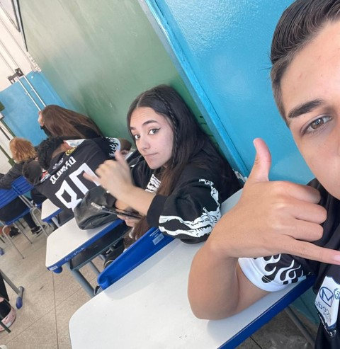

1°ano
Transição do fundamental para o médio:
O 1º ano do ensino médio foi um período de grandes mudanças e adaptação.
A transição do ensino fundamental trouxe novos desafios, como uma carga maior de conteúdos,
professores diferentes para cada disciplina e uma rotina mais exigente.

Primeiras dificuldades
No início, enfrentei algumas dificuldades para me organizar
e acompanhar todas as matérias, principalmente aquelas que
exigiam mais atenção e estudo constante. Com o tempo, fui aprendendo a lidar melhor com essas responsabilidades.Amizades
Também foi um momento importante para criar
novas amizades e me adaptar ao ambiente escolar.
Aos poucos, fui me sentindo mais confortável e integrado.
Corinthians:

Sou apaixonada pelo Corinthians. Torcer para ele vai muito além do futebol: é emoção, história e alegria compartilhada com amigos e família⚫⚪
Vai Corinthians!
Ídolos:

Uma das minhas maiores inspirações é o Davi Brito. Ele entrou no reality show para melhorar a situação financeira da família e fazer a mãe orgulhosa, mostrando que determinação vale mais que fama.
Contato:
Email: majuconde12@gmail.com
@mayu.xu